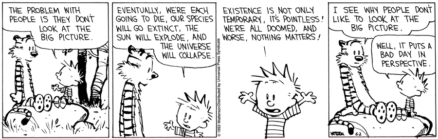
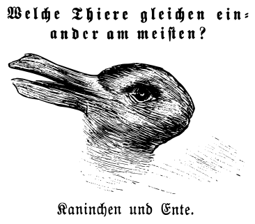

Book 2: Death¶

- Bill Waterson, June 02, 1993
baby, air and light and time and space
have nothing to do with it
and don’t create anything
except maybe a longer life to find
new excuses
for
- Charles Bukowski, Air and Light and Time and Space
Interlude¶
We now begin the laborious work of constructing an ontology and metaphysics of Death, in order to show how philosophy is by necessity an incomplete field of inquiry and will forever remain so. We do this so that no one need ever again concern themselves with the misery and pointlessness of the whole endeavor. In this moment of respite between nihilistic soliloquies, the author once again reminds the reader there are far better way they could be spending their time: learning a new skill, watching dogs in the park, enjoying a conversation with friends. The author implores the reader that nothing further will be gained, that what awaits us is primal horror of Being and our inability to come to terms with it. Applying analysis and logic will not force Death to yield anything of value. Any naive hope we retain to contrary thus far will, by the end, be smashed to bits and cast into the wind.
In doing so, we will necessarily touch on the futility of searching for answers to life’s mysteries. There are none to be found, it must be said. We are forced to content ourselves, if at all, in small doses, in the clarity that can be found in the margins.
Is it enough that we have this brief moment where we are capable of creating and sharing, of love and tenderness, even though it is fated to mean nothing forever after? That all we sow we shall never know, that we plant trees for generations that will never know our names, this is all that can be granted as the best possible outcome, by any measure of likelihood. Rarely do we give voice to the silent thought which outlines the worst possible outcome, lest it in fact be case, that once we die it will be as if Nothing ever was and all our acts, intentions and feelings will retroactively come undone, never to have been because Nothing was all that ever was in the first place.
Is it cause for despair that we will never understand what we are, no matter how hard we try? That we must admit there is no answer to any of life’s fundamental questions is itself without question, undisputed in its integrity. You cannot answer the quedstion, What am I?, in any satisfactory sense. The author invites the reader to try; he will gladly read the five hundred page dissertation that results, even though he already knows its conclusion: certainty does not extend into the realm of Death.
A-ha!, the rationalist exclaims. Certainty is not a prerequisite of knowledge, they reply. For the knowledge of if A then B contains in it a quanta of knowledge, namely the implication that exists between A and B, but it makes no claims on the existence of its constituents, A or B, and thus it can be said here we have knowledge that does not realy on the appearance of A or B. One need not be certain of A to conclude if A then B.
This is not what is meant by the proposition certainty does not extend into Death. What it posits is a higher order annihiliation of the constructs of said logic, through the very mechanisms of logic that were used in its construction. For logic, if it can be said to be complete, must ultimately be applied to untangling the problem of what we are, or else it cannot claim to have provided a basis for the becoming of Being in its totality and must forever remain incomplete. But logic cannot, in a fundamental way, handle the mechanics of our Being, what it means to say I am. To do so would require a basis of experience outside of experience itself by which experience can become a thing, but experience is the basis by which things enter into Being, ours included. How does one say I am without interpretting it as the experiential I immediately perceived simply through Being?
Let us suppose the contrary, that is to say let us grant the rationalists all they ask, and allow ourselves to believe that our Being is just the aggregation of particle physics, that our Being is reducible to some logical formula. Knowledge of this does not in anyway undo the immediacy of experience. There is no equation, once understood, that will dissolve our Being into its constituent logic; we will not one day become inert symbols on the page, for we cannot be anything but what we are and the question of what we are cannot be anwsered with certainty.
If it were the case that our Being, in its primary essence, was contained in the laws of physics and mathematics, there will come a day when a(n) (un)lucky physicist is solving his equations and recognizes in their computation himself and not merely his image, but himself embodied in the equations themselves, as an extension of his own Being; for that is the conclusion of rationalism, that we must be reducible to priors, and those priors must ultimate be reducible to the forms of time and space. If that is so, then we are already in the representations which represent us, for our Being cannot be anything but what it is and so if it is mathematical then what we are is already mathematical, and upon our discovery of its theorems and foundation, we will have found outside ourselves a quanta of experience, our experience outside of our experience; The end result of rationalism, any and all rationalist schemes no matter their form and procedures, is to find yourself in two distinct places at the same time, which any rationalist would admit is absurd. Rationalism is undone ipso facto by rationalism itself.
¶
In the previous sections, we said an understanding of Death is impossible. A close correlate of understanding is reason.
Likewise, Death can not be the reason for anything in our phenomenal perception, because it is Nothing at all in the first place; Death is the distinct and inexplicable lack of Being where we should be, an ontological lacking of the highest order. Death cannot be given as motive to explain an action because Death implies the impossiblity of action1. If Death has a logic, an algebra of its own by which we pass from one equivalent form of Death to the next, it is not one the mind can grasp; Death has no form to manipulate, no indication to point towards it, no appearances to announce its presence with us. Death is that which we cannot get to through representation. We have in Death a Kantian nihil negativum, a Nothingness born from absurdity, a nullity by necessity, a concept without content or form.
Death will not fit into the grooves of logic, into the operations of modus ponens or syllogism, because there can never be any intuitive jump from a hypothesis that presupposes nonexistence (a topic to which we will return in later sections); Death cannot be tested as a hypothesis in any field of inquiry rooted in phenomology, which is our present course, because Death is not the cause of anything with respect to Being; Death is the end result. What happens thereafter cannot be communicated back through the mechanisms of causality to the Being we were. Death is the ultimate datum to which all possibilities of Being must point but never reveal, the terminus of all causality, all facticity, all contingency. Because of this, our endeavor is doomed from the start arrive at Nothing.
Analysis can only claim validity to extent that it can be brought into correspondence with the concepts it purports to analyze. Any analysis of Death must eventually come to the point where it is held up against the Nothingness it represents and finds a lacking therein, not in itself, for lacking cannot be found in pure form, but in what the form attempts to represent, the absence of Being, the hole where Nothing now remains. Thus fails the project of analysis in its entirety, unable to contend with the entirety of existence because all it can say is what is or happens, by its nature as representation, never able to represent what is not in the absolute sense, which is the exact definition of Death.
Regardless, perhaps in spite of this, we proceed. In order to make these features of Death emerge from the discourse, we will attempt to formulate an ontology and metaphysics of Death. In the first pass, we will extract from the philosophers and scientists who preceded us whatever we find useful and salient.
Up to this point, we have been using language that lacks precision. There is no way around this; Philosophy necessarily emerges from the colloquial “fuzziness” of language. If philosophy can be said to have a purpose, then it is clarity. With that in mind, the next few sections will provide, if not rigor, then hopefully at least clarity.
With a nod to Camus, we then naturally turn our analysis to find a place for the concept of suicide in ontology. By suicide we mean an intentional course of action where what is sought is Death itself. At this point, we lack the language to adequately account for suicide as it relates to Being and Death, so we must content ourselves here with saying, “isn’t that strange to do?” and wait until the pretense of philosophy does its dance while we all hold our tongues and secretly think, “it is not strange at all”.
We will return to the topic of suicide in due time.
¶
Before the introduction of the rhetorical devices that will give us the means to approach Death through analysis, we must comment on the endeavour of speculative philosophy.
We start by defining the terms of our exegesis, in light of the previous commentary: Being, Nothing, appearance, existence, world.
As Russell and Whitehead explained in the introduction to Principia Mathematica, any formal system must necessarily contain primitive notions irreducible to further primitives; Wittgenstein called these components of a formal system, atomic facts. Whatever we call them, we must leave their interpretation to the reader. We will dress these terms in fanciful language, place them in analogical relations, shift them through symbolic arguments and attempt to elucidate their meaning through the forms by which we come to know existence via appearance, but ultimately they must remain as the ground upon which to build further artifices, thus we must leave their validity in the hands of contingency.
Existence is the only fact.
Appearance is not identical to existence.
Being is identical to neither existence nor appearance.
The negation of Being is Nothing.
¶
postulate of precluded existence: Death happens to all Beings.postulate of failed contingency: Death is unknowable through phenomena (appearance).postulate of non-equivalence: Unknowability is phenomenally (apparently) equivalent to Nothing.
With the first postulate, it is likely we all agree or are at least willing to grant truth long enough to see what follows. We then turn to the justification of the latter two axioms, as the meaning of either the postulate of failed contingency or the postulate of non-equivalence is not clear at first glance.
¶
Before we continue, we make a brief detour into metaphysics. When we assume their validity, the postulates enumerated in the prior section give us the means to deduce a few theorems about the metaphyscal nature of Death. We will shall call these theorems, the “theorems of Nothingness”.
First Theorem of Nothingness: If Death is unknowable through phenomena (failed contingency) and if unknowability is phenomenally equivalent to Nothing (non-equivalence), then, by syllogism, Death is Nothing.
Second Theorem of Nothingness: If all Beings will die (precluded existence) and if Death is Nothing (first theorem of Nothingness), then, by syllogism, all Beings will become Nothing.
Third Theorem of Nothingness: All Beings become Nothing (second theorem of Nothingness), but Being is not identical to existence, therefore Nothing is existent.
–
In the preceding, we take note that Nothingness, in its proper ontological place, does not negate existence. Existence is something over and above Nothingness. This should be obvious upon reflection, when we consider the possible meaning of the symbols: 0, null, none, empty, void, etc.. If Being is to have a relation to Death, then as a pre-condition we must be able to find Nothing in our Being with which to relate to it.
But, we have already assumed that Death is unknowable through phenomena. This, taken in conjunction with the non-equivalence of existence and appearance, implies if knowability is to apply to Death at all it must occur through existence, rather than appearance. But since knowability is knowability of appearance, we therefore conclude Death is unknowabile through existence or appearance.
¶
In true negative fashion, we will start by asssuming what is false and show how it leads to a contradiction. The negation of the axiom of failed contingency is that Death is knowable through phenomena. With this in hand, the counterargument to the axiom of failed contingency can be raised along the lines detailed in the paragraphs that follow. Through the course of this counterargument, we will encounter the axiom of non-equivalence but defer a full discussion of it until the later headings in this section.
The Kantian Counterargument to the axiom of failed contingency: Imagine that a rock sits before us. It is self-evident that what we find in our apprehension of the rock is not the rock in itself, but our representation of the rock. As Immanual Kant demonstrated and Arthur Schopenhauer refined, all knowledge is only knowledge of our representation of world, its reflection in the sense data, the enumeration of objects through the medium of form (i.e., objectification). We do not know the world as it is; we only know the world as it appears. This is the distinction between noumena, the existent, and the phenomena, the appearance, that Kant famously discovered, or at least put to paper before anyone else.
The interiority of a rock, its existence, is by definition beyond the limits of our Being, as we can only ever apprehend its appearance, but we do not thus claim a rock cannot be understood or that the rock is unknowable, or else mechanics would be of no practical use.
We come to an understanding of mechanics and physics through our representations. We approach the rock, experience how its appearance depends on our perspective, on our ability to relate to it through space and time. We interact with it and thereby come to an understanding of its nature. We discover its boundaries, the surface across which it begins and we end. We can feel its existence when we pick it up, along the lines of force that oppose our own and pull it back towards it gravitational focus. When we push on the rock, it pushes back and impinges on our senses. Its inertia becomes tangible in our grasp.
In other words, we find ourselves in the world with the rock, what Heidegger termed throwness. It is only in the sense that we cannot be the rock, that it is separate from us; there is imposed between us a nihil privativum, a void between the representation of our Being and our Being itself.
If we admit to the existence of knowledge and knowability in general, then we also admit to the assumption that which is not our Being can come to be known through our Being. To say Death is unknowable is tantamount to claiming anything external to our Being lacks existence, goes the counterargument to the axiom of failed contingency. If Death is external to our Being, then it does not necessarily follow that is unknowable. The fallacy of the proposed counterargument lies in tacit assumption the void crossed from existence to appearance is equivalent to the void crossed between Being and Death.
However, Death cannot be found in the regurgitations of existence into appearance. No matter where we turn, our own Deaths are nowhere to be found in the appearances we attach to the world. Death has no boundaries that we perceive. We cannot approach it in space. Death cannot be probed. It has no weight to be felt, no surface to touch. There is no way to know what is on the other side of it, or even if there is another side, for Death has no reflection in sensation, or at the very least this sensation is commensurate with the cessation of sensation in a way that will always remain inaccessible to us. Once Death is apprehended and integrated into our Being, we cease to be Beings.
If Death has its own interiority, i.e. a Being of Death for us, there is no mechanism to be found in the totality of our Being for measuring it or bringing it into our apprehension. For as Wittgenstein once said, “the picture cannot place itself outside of its form of representation” 2.
¶
It may be argued the definition of Death adopted in the preceding is too narrow, that is seeks to restrict itself to the personal, to the experiential, to the phenomenal and in doing so fails to acknowledge the objective and communal aspect of Death. In other words, the definition of Death that has been discussed so far does not include our apprehension of the Death of the Other.
To this point, we counter immediately with three counterpoints:
If, in the analysis of Death, we are not seeking a phenomology of Death, a personal experience of Death, then what is it we are seeking? What do we hope to achieve?
How do we bring to our attention the implicit ontological relation that binds us to the non-Being of Death versus the non-Being that
facticallypreceded our Being, i.e. Death vs. Pre-Birth, without narrowing the scope of Death to indicate exactly that one type of non-Being and not the other?What is lacking in our current definition of Death that would broaden its scope to include the category of phenomenon here termed the Death of the Other, whose addition would also not lead to the loss of focus on the object of inquiry, i.e. how we understand Death as it relates to Being?
Let us in turn dwell on each question and how it relates back to the objection that our definition of Death does not include the Other, before we continue.
¶
To the first point: If the assumption of the general unknowability of Death is granted, this would seem necessarily to lead to the exclusion of the possibilty of a phenomonology of Death. How can we bring into Being and experience that which cannot be known? Indeed, if Death is unknowable, how do we know it hasn’t already occurred? This is the purest form of solipsism, a species of thought whose derivative forms will inhabit the remainder of this work: that we ourselves as Beings have no way of knowing if we already dead.3 4
Following this solipsistic train of thought to its destination, we must reason there is no basis for assuming Being should be any different than Nothing, for we cannot get outside of our Being into the bounds of Nothing in order to check. We have only our apprehension that the world is for us and anything the world is not should be so in a way that it follows factically from the possible.
We therefore have no basis for saying: if Death is Nothing (in the phenomenal sense), then Death precludes Being, i.e. the conditional disjunction of axiom of non-equivalence and axiom of precluded existence5. The conclusion we then draw is the mutual exclusion of Death and Being is not a relation of necessity, but incidence, and it could as well be the case the opposite is true. We cannot expunge this overlap from solipsism. What resides in this strange overlap of Being and Death, if not the phenomenology of Death? The problem solipsism wished to disperse emerges from the dust, like the eternal phoenix. 6
We shall return to the topic of unknowability later on and discuss it in more detail. We must remark, at this point, however, that unknowability is like a disease, passing from host to host, rendering all that it touches weak and unable to withstand the force of inspection. The analogy of disease falters, however, for there exists no disease which infects itself or possesses its own cure.
Knowability as a relation when applied to unknowability as an object yields back to us the existence of possibilty7. In other words, “if you tried to doubt everything you would not get as far as doubting anything. The game of doubting itself presupposes certainty”8. If a thing is unknowable, then there exists a recursion of knowability that attaches itself through necessity to the nebulous mass of unknowability, because one cannot approach unknowability without thereby coming to know of it. In this way, we form the chain of propositions:
Death is unknowable.
“Death is unknowable” is knowable.
We see in this argument how the tendrils of knowability intersect with those of unknowability, and give us a foothold, however miniscule, to raise our awareness towards Death. If Death is unknowable, then we can at least come to know of what is unknowable and hope the geography of the unknowable is such that it allows us further passage. This is all we can possibly mean by phenomology of Death in any ontology that seeks to avoid the pitfalls of solipsism: that we can come to know of what is unknowable and hope for more. Our knowledge of Death thus enters “through the back door”.
¶
We now turn to two of the most important sections in establishing the proposed postulates of Death, this section and the next in which we explore the relation of our Being to that of the Other, and the relation of each of these plus their conjunction to that of Death.9
We start with a question that will at first glance appear to provide the entrypoint for the contradiction of the postulate of failed contingency: How do we know we die?
To make the intent of the question more plain, let us recast it: Would a human raised in isolation comprehend its own mortality?10
We said before Death is the final fact towards which all ontologies, all the myriad ways Being can relate to the world, must ultimately comport. We will now show how this arises through Being’s apprehension of its facticity. The thought experiment of a human reared in isolation brings this into stark contrast. We thus first further clarify our assumptions to avoid any ambiguities in the arguments that follow.
Let us assume the human is in an all white room (to better evoke eternity) and this is the extent of the space11 alloted to it throughout the course of its existence12. We immediately ask ourselves how it is the human is sustained in this thought experiment. This question begets another, more fundamental question: whether the first question, that of sustenance, is a question of ontology or biology. Is Being contingent on biology or is biology contingent on Being? Is it possible to be without first being a “biological Being”?
Heidegger would say that any philosophy that calls itself such is properly concerned with the nature of Being that precedes the Being of biology, i.e. the ontology of Being versus the onticity of Being. Here we meet a problem elucidated by Eugene Thacker in After Life: ontology appears at odds with Life, for in order exorcise biology from Being, we must first account for Life in ontology. To rephrase in a question: is our Life as a Being the same as our Being as a biological Life?
The advance of technology seems leading towards a point where consciousness will enter the digital realm13. We need to be careful not to be pulled into the gravitation of syllogism and therefore conclude Life is not biological; it may yet be the case, but the emergence of digital consciousness would not necessitate this conclusion.
To what extent does our isolated human in the all white room, ignorant of biology, distinguish its Being from that of its Life, vis a vis its immediate apprehension of its Being-in-the-world? Without the Other to act as reference, with what yardstick does this human demarcate the concept of Life?
Claim: In the absence of the Other, the concept of Life is equivalent to the concept of Being.
Our isolated human has no basis for establishing Life as separate from Being, as if the dimensions of Being collapsed in on themselves, projecting down into the lower dimensions of meaning, as if Otherness were an essential orthogonality to Being-in-the-world in order to span all that is, was and ever will be. We cannot say Life exists without presupposing the Other, for we would not have the conditions for the conceptualization of Life if there were not some Being outside ourselves between which the only commonality we could draw was that of Life. For this reason, Heidegger proposed the neologism Being-with to appropriately label the ontological relation thus enumerated; we come to the world ready to be with others.
This still does not clarify what we mean by Life, but it does bring into relief its dependence to be expressed on the concept of the Other. Otherness is a possibility that haunts the representations we attach to the world. There is no experiment we may perform that denies the proposition: “the rock was alive”. We know from our Being that to be first of all means to be in the world, and this is a property we share by necessity with the now infamous rock, since it is in the world with us.
To make it clear Otherness is only a possibility of representation, we may consider the proposition: “blue was alive”.
Otherness, like Death, is a possibility that is everywhere at once, spread out across the surface of the world, lurking in every corner, but unlike Death, its presence does not annihiliate our Being.
We encounter the Other in our representation of the world as a Being outside of ourselves, and come to understand we share our Being through representation.
Our everyday intuition and the historical accumulation of knowledge, via the mechanisms of family and society, has led us to learn the common form of the Other, i.e. human, at a young age, so that our knowledge of Being becomes nearly coincident with our knowledge of being human in the fog of memory. Indeed, the nature of humanness makes it harder to disentangle the order of ontological necessity that emerges in the human Being, for it is not so obvious if our isolated human in the white room must first encounter the Other in order to be shown its desires have an outlet to satisfaction in the world, or if the necessity of desire brings with it the apprehension of the possibility of its satisfaction.
Claim: the infant does not act in the mode of assauging desires, it acts in the mode of desire itself. It does not reflect on what, when, where or how to consume, it merely consumes as the appropriate stimuli emerge from its apprehension of the world; it does not yet have the ability to bring that which it consumes into its world through its own action, nor does it yet understand what action is, and thus it does not have the means to understand what it is that desire connotes.
We learn what it means to be in the world by acting, but this is the project of consciousness, not Being. (is it???)
This is no reason to assume Being necessarily comprehends that its actions affect the world. The relation of causality is not contained in that of Being.
In our ontic apprehension of the world, we objectify and this objectification contains as part of its operation the parallel apprehension of the possibility of thingness or Otherness and also the apprehension of their mutual exclusion.
This is why Carl Jung observed the correspondence of mythologies in societies at a primitive level of scientific development imbue the world around them with consciousness. find quotes.
This is why Aristotle so obsessively catalogue and classified the different types of Life.
If Death is the negation of Being and if Life is what we have in common with the Other that is also a Being, then the death of Life is a subset of the Death of Being.
If by Life we do not mean the evolutionary process that yields through successive generations organisms adapted to a changing environment and if we must restrict our focus to ontological concerns, then in order to separate Life from biology, by Life we must mean the possibility of Being.
Claim: The infant is initially in the mode of denotion, where it is pure awareness without reflection. We call this the infant’s onticity, i.e. how a Being apprehends that it is in the world. At this point, we have the necessary but not sufficient conditions for the emergence of causality, i.e. how the Being of its action or inaction causes the world to respond or not respond. At the point when sufficiency is reached can consciousness claim to have entered the picture.
Biology exists for the human in the sufficiency of the relation thus described, not the necessity. To reiterate: we must necessarily be aware and sufficiently “biologized” in order to come to an understanding of Being-in-the-world. “Biologizing” is simply facticity, our contingency, disguised in another form. In case of the human, this takes the form of neural networks and their multifoliate connections.
Only after the infant discovers its ontic basis and the consciousness contained therein does it then shift into a mode of connotation, where it learns ontology, i.e. how the condition of Being-in-the-world contains within it the Being which apprehends its Being-in-the-world and how causality gives rises to the possbility of its future.
The question, then, we are asking is this: is the transition from onticity to ontology independent of its human dimension, i.e. as an apparent consequence of the layering and networking of neurons in the brain?
Upon introduction of the Other in the world of a Being, to what extent does an ontology of life emerge via necessity? Is Otherness, in and of itself, enough to conceptualize Life?
Claim: In the absence of the Other, the infant would die.
Without another present to feed it, the infant would die, its pure desire unable to reflect on how to overcome itself. The infant would perceive only raw desire and a unreactive world. In this state, even if the infant were brought into existence next to bottle filled with milk, it would still lack the ability to comprehend (as opposed to apprehend) what that bottle represents; it has not been shown its meaning.
At this point in the thought experiment of the isolated human, we lack the conditions for consciousness. Consciousness cannot arise and come to know the world as something with which it can interact if the world does not in the first place rise to meet its presence. In that case, the Being that would be consciousness merely dies, existing as only a brief moment of unfilled desire, a flash of Being in the eternity of Nothing.
Biology is only incidental to this picture. It is the form through which Death rips away Being.
Our Being is a Being of knowledge, among other things. Knowledge is the coincidence of form. By form, we do not mean matter, or atoms, or particles. We mean the way Being is composed of indications towards something which it is not, existence. Knowledge is factical, in the sense that it requires time and space as the horizon by which to express it. As infants moments from our birth, there are only the beginnings of knowledge, the first points in our world trajectory which we will use as reference for the relations that form the “nexus” of our Being.
Knowledge of nourishment requires knowledge of ourselves as humans. We cannot have knowledge of our Being human without the representative form of the Other against which to compare and contrast our own Being. We are only human insofar there are Other humans. In the case where there are no humans, the label of human no longer references to an appearance in our phemonology, unless we take it to mean myself. In an ontology of one, the term human becomes equivalent to myself, and thus loses all meaning.
What is it that initiialy draws us to the Mother’s breast? Do we possess an instinct for it? The modern substitution of the bottle for the nipple seems to give lie to this claim. If there is no instinct to consume, then the most we can say it we come to know what it means to consume. How else would this knowledge come to our Being, except through our recognition of the Other’s representative form as it relates to our desires?
Is the distinction of Mother versus Father ontological?
¶
Upon making ingress into the Other’s perception, Death is no longer a subjective experience, but instead a fact among others. In this sense, Death is similar to consciousness, in that consciousness once objectified in the consciousness of another ceases to be consciousness at all, but becomes a representation of that consciousness, an indication pointing beyond the realm of Being towards the Being of another, unknowable like Death, but unlike Death, inferrable through the observance of the causal connections that unite us in our Being.
In other words, the Other is unknowable as an experience, but the experience of the Other as an objectified ingression into the sense data is knowable through the medium of representation. Put more simply, we can recognize intelligence in the world outside of ourselves through the presence of form. In this way, I know whatever entity responsible for traffic signs is also an intelligent being because traffic signs indicate a concept we both understand, and this understanding is embodied through the course of our synchronized action, and through this understanding and sychronization we come to know the point of emanation in our world of action not our own as the Other.
¶
A further counterargument may be made by the Platonists: If Death cannot be approached or felt, this does not signify a rupture in Being, a fundamental horror woven into the fabric of existence, for this is also the nature of concepts. Ephemeral ideas like honor and duty cannot be approached. You cannot probe the interiority of love. These things nonetheless exist, not concretely as in the case of physical matter, i.e. as objects, but abstractly, through the reflection of consciousness, i.e. as concepts. They become existent in our Being despite their lack of “substance”, as it were, first as awareness through the objectification of the sense data and then as consciousness through the classification of the represented objects into concepts.
This is the nature of conception, what Heidegger called readiness-to-hand and Schopenhauer the principle of sufficient reason: a concept exists in relation to the complex it is conceptualizing and its Being for us is exactly this relation abstracted into pure form. So we see a pencil poised over a sheet of paper and immediately apprehend the concept of writing in the relation that joins the tip of the pencil to surface of the paper. This is not the only interpretation of the relation between the two objects here, for conceptualization and the branching relations that form its basis are not a definite process but perpetually efferverscent. However, we will defer discussion of this point until later, where it is not so out of place.
Instead, the reader’s attention is drawn only to the fact in the preceding that a concept exists in a logical form where it refers to a set of representations of our Being and explains some aspect of the relation that defines the class of objects thus being enumerated. The thing which all instances have in common is the concept.
To make the existence of abstraction more apparent, we consider a concept whose existence is not up for the debate, or is at least tacitly assumed by all to have some passing claim to existence. In the same way Platonic Ideals are perceived, the concept of Number is never directly observed, only its manifestations. The concept of Number is an abstraction over a disjunction in existence, a union of partitions otherwise separate: The concept of two occurs in the complex of a bicycle as well it does in that of human eyes or sexual reproduction or the electrons in a helium atom, disparate phenomena that share only one commonality. If we substract the differences from these particular manifestations so that we are only left with what they have in common, the residue is exactly Number.
By way of analogy, love is what remains when the bride and groom have been negated, when the content of the world has been removed and all that is left is the bare relation, its intentional form. A concept is the meaning of a particular class of forms; A concept is the abstraction of a particular relation between disjunct sets of objects, what remains when everything else has been removed. This is how we apprehend the so-called Platonic Ideals. To question the existence of love is to also question the existence of Number. We therefore conclude this concept and all others must at least share the same type of existence as that given to Number.
Death is not like this, as it can be neither objectified nor conceptualized. Thus, it can not claim existence through either of these modes of Being. We will elaborate upon these two ideas in the following sections.
¶
In the first case, Death cannot be objectified through relations, because Death resists at an ontological level the application of the first essential relation in any proposition: that of existence.
What form remains in the statement “the Being is dead” when its content is subtracted? 14
The remainder is plainly a contradiction of the law of the excluded middle, i.e. it must be the case that either A or the negation of A is true, where A is understood to be a symbol standing for a proposition upon which a judgement of truth can be rendered. A Being cannot be dead, because to be means to not be dead. In claiming that something is dead, in the present tense, you cannot help but commit a logical fallacy.
Death is not something that occurs in my present, only in either my future, where it defies the laws of causality to be shifted into the present except through the process of time which leads us back to the original statement’s contradiction in the present tense, or in the Other’s past, where once I am dead my Being only exists insofar as it is objectified in the Being of the Other, where it no longer has any subjectivity or consciousness and can no longer claim to be my Being.
Yet, it makes even less sense to say “the Being was dead”, for Death as a fact cannot be contradicted by the circumstances of things as they currently are, i.e. the facticity of Being. If a Being is now, then its Death has not yet occurred and so consequently can not have the operation of “was” applied to it. Conversely, if a Being’s Death was a fact previously, then it must also be a fact now or else the meaning of the operation “was” has been violated and we are back to the original problem, having gained no ground.
Indeed, the only way to attach meaning to the preceding proposition is to conjugate it with respect to the future, i.e. “the Being will be dead”. However, it must be noted, this is a type of future that only exists in the limit, where infinities and infinitesimals yield values that need not exist at any particular moment in time. In other words, it is a future that never becomes present, but is nonetheless always there, just out of reach. As if logic were on a treadmill, perpetually running in place, never getting anywhere.
There is no way for Death as an object to exist in a logical relationship without a contradiction arising from within its boundaries, and thus no way to talk about Death without talking in circles. Thus, we have here a glimpse into the essential nature of Death: that which cannot be represented, that which is hidden from representation, that which is hidden from Being, that which can only be Nothing, the nihil negativum, a void born from the contingency of the absurd.
To sum up the ontological relation described in the precedeing paragraphs, with the foregoing warning in mind, we might define Death’s relation to our Being with the appropriate Kantian-Heideggerian neologisms: Being-before-Death, Being-near-Death, Being-as-not-Death.
If we now toy with the likely hypothesis that Death is a form of ontological negation, we may wonder why negation is only apparent in one of proposed relations. Upon reflection, it should be clear these two, Being-before-Death and Being-near-Death, are relations whose form is time and space, therefore their relation is one of subjectivity, whereas the last is the subjective relation itself, that is to say, how Death stands in relation our Being itself, i.e. as its negation. As such, we may rephrase to draw out a negation from the subjective relations embodied in the first two concepts, but the last term must necessarily contain a negative.
In other words, we may redefine the first two relations as Being-not-present-with-Death and Being-not-far-from-Death, respectively. In doing so, we will have gained nothing, except to make apparent the subjective nature of time and space. But the last term, Being-as-not-Death, is not amenable to any such transformation if it is to retain its sense, the sense in which we mean my Being is mutually exclusive with that of my Death. We may say Being-not-in-Death, in which case the negation has only been rearranged, or we may say Being-without-Death, having only subsumed the negation into the out, which in itself negates the with. After a few such bouts of semantic gymnastics, the futility of the endeavor becomes apparent. At every turn, the “essence” of Death cannot be escaped. There is no way to traverse the boundary between Being and Death through language and representation without the operation of negation acting as the gatekeeper.
Perhaps the reader may at this point wonder why we play language games, whether this method of discourse has any merit as it relates to the inquiry of truth. Terms such as Being-before-Death and Being-as-not-Death are by no means a rigorous foundation on which to build an analytical calculus. They do, however, in Heideggerian fashion, force the mind to confront how it, insofar that it is is a Being, relates to Death. If one abandons the pretense of sense and admits to the possibility of silliness, we may play this game where we attempt to map out the contours of Death as it relates to our world, using the medium of language and meaning. It is only when we allow ourselves this pretense, that we may see where it goes awry, and it is at the point where language fails us, that we begin to understand what it is that Death could possibly be.
We might also remark at this point that Death’s essential contradiction appears to arise through the intersection of its Nothingness with it’s so-called contingency. Death is something that happens to us. Death is fixed as the endpoint in the sequence of causal relations that form our factical trajectory through the world. Every choice we make (if it is a choice) from the moment of our birth leads inevitably to our Death. Death is fixed in everyone’s lives as the final point upon which we all ultimately come to rest. Death, in this sense, is invariant.
In physics, it was discovered in the late nineteenth century that no matter your mechanical frame of reference, i.e. how fast you are travelling, what forces are acting on you, etc., you will always measure the same speed of light. This was a counter-intuitive discovery that required a rethinking of the way things are, because we tended until that point to think of motion as additive, i.e. a baseball thrown from a moving train (or car, in modern parlance) travels with the speed imparted to it plus the speed of the train. This intuitive notion arises from our idea that motion is relative to space and that space is absolute.
Schopenhauer, extending the ideas of Kant, was the first philosopher to see that space itself was nothing more than a relation the subject used to apprehend the world as representation, and thus it must only have Being for the subject. It was then discovered by Einstein, in the next centry, if the speed of light does not change with respect to your frame of reference, then its invariance leads to the relativity of space. Thus, Einstein provided the scientific and mathematical foundation of Schopenhauer’s philosophy.
All this is to say, the invariance of nature provides the ultimate metric for the subjectivity of Being, the caliber to which all other measurements must scale. The speed of light is a constraint in the form of our representation, not space or time; and so it is experimentally verified that clocks tick slower the faster one moves, a phenomena (in the truest sense of the word) known as time dilation. This, in conjunction with the notion of relative motion, ensures science and mathematics have adequately expunged the notion of time and space existing in and of themselves.
The relations that underlie our apprehension and perception arise through their ability to point towards these absolutes. The form of our representation is time and space, thus these forms bend towards that which is invariant.
Death, then, as its relation to our Being starts to emerge through the fog of negation, is not an object, i.e. representation, but a constraint imposed on the form of our representations. In the same way that time and space become relative metrics to accomodate the invarance of the speed of light15, our Being becomes a relative metric to accomodate the invariance of Death.
In this sense, we say the ontological substratum of Being is Death.
¶
In the second case, Death cannot be conceptualized, except insofar as the Death of the Other makes ingress into the representations of my Being, but then, in this case, it is not my Death that has been conceptualized, but the Death of the Other. The process of conceptualizing Death passes over my own experience of it and leaves me with an empty concept, a concept that does not have Being in the way Platonic concepts do, because the abstraction of the Death of the Other does not lead me any closer to an understanding of my own Death in the way the abstraction of love does lead me to understand what the love of the Other is, because I too have a phenomenal experience of love that I may, assuming a pretense of uncertainty, infer in the Other.
Furthermore, Death as a feeling is like neither love nor duty. The concept of Death induces a feeling, but it is not the feeling of Death that is felt in the way one feels love or duty, for if one felt Death, they would therefore be dead and incapable of feeling. In those instances when one is in the process of apprehending a concept and integrating it into their Being, such as love and its effects, it is a compulsion felt as distinctly as weight or normal force, albeit with a locomotion peculiar to its class. One is compelled to act a certain way because they feel, for lack of a better term, the corporeal sensation of the accompanying conception.
Death is not a motive concept, in the sense that it induces in the conceiving subject the action denoted by its concept. There is no phenomonology of Death, no qualia of Death, no Being of Death for the subject, only what Martin Heidegger termed Being-toward-death. The subject can only orient themselves toward Death, but they can not bring it any closer without thereby ceasing to exist.
¶
The concept of Being-toward-death, this ontological polarity between Being and Death, brings with it a whole host of subjugated concepts that stand in relation to it: grief, horror, acceptance, denial, love, hate, anger, awe, adulation, worship. Indeed, one might be tempted to conclude Death is the fountainhead from which all other emotions spring. The only other analogous concept is to be found in the spiritual; for instance, in the Judeo-Christian concept of the mysterium tremendum, whereby the worshipper enters into a state of rapture, by turns jubliant and horrified, when considering the object of his or her worship. Death, in this sense, overlaps with the Holy.
Heidegger liked to play language games. By Being-toward-death, he meant to contrast this with his term Being-in-the-world, in order to draw our attention to the prepositions connecting the objects in their conceptual repose. A Being can be in world, whereas it can only be toward Death, the relation in these phrases indicating by turns how the world contains our Being in such a way that we necessarily fit into it as if it could no other way whereas Death always recedes away from our Being, a thing that can never in our Being, which would preclude its status a thing altogether.
In one of the few true positive analogies possible with Death as one of its poles ( for reasons that will shortly be discussed ), Death in this respect is similar to the concept of a limit from real analysis. The existence of a limit relies on the subtle notion of mathematical Continuity. In our everyday understanding of Continuity, we tacitly assume a logical form whereby a set is ordered and this ordering is such that each term succeeds the previous in a contingent way so that the series becomes “connected”; every member in the set becomes the next member through the property of “continuity”, in an almost mystical, transubstantive process; In travelling from point A to point B in space, one must travel through all intervening points and one does so in a way by which we mean “continuous”.
Our everyday intuition of Continuity skips over Zeno’s paradox, i.e. the infinitely divisible length, without even considering its annihiliating consequences. As mathematics has discovered, though, this is a fallacy of our intuition. The subject objectifies Being into representative forms and we cannot help but discretize a continuum when abstracting it into our thoughts; it is only through the aid of symbolic logic, as Bertrand Russell put it, that we are able to construct the necessary mental apparatus to perceive the true nature of continuity. When we apply rigor to the definition of a limit, we are forced into a definition where we can only say what it means to approach a point, never to arrive at a point.
The modern mathematical definition of a limit symbolizes exactly this idea: getting infinitely close to a point without actually arriving at it is logically equivalent to physically passing through the point being approached, so that is suffices to define the latter in terms of the former, i.e. the delta-epsilon definition of a limit. Indeed, pointwise discontinuities are permitted within the theorems of differential and integral calculus. In other words, a curve connecting point A and point B is mathematically the same as another curve connecting point A and point B with a countably infinite number of points removed. The implication here is then that it is possible for something to exist without it having membership in the set of things we call existence; or to put it another way, the thing you are approaching need not even exist in order to approach it.
Continuity implies an abundance so excessive that it can, without contradiction, contain an infinite number of Nothings. Within this statement we see a profound truth: our inability to understand the nature of things. This notion of Continuity does not make sense. Indeed, it takes a trained mathematician many years, except in cases of genius, to overcome the intuitions ingrained into our experience through our everyday lives that lead us to form an incorrect understanding of Continuity.
In this way, we say Death is an ontological limit (perhaps the ontological limit). Death is something that exists by virtue of our perpetual approach towards it, but this does not necessarily mean that Death is an existent thing. In the same way that a limit may approach a value only to find the value missing but nevertheless yield that self-same value, we approach Death.
In this language game we are playing, we see why, then, it is possible to draw a positive connection between the concept of a limit and the concept of Death, despite Death’s aversion to conceptualization. Because the limit attempts to express precisely what Schopenhaur called the principle of sufficient reason in space, and because all Being in space is subject to Death, the concept of a limit contains within it a seed of the original horror of Being: that something we perceive as existent when it comes to pass might reveal itself as Nothing at all. There is nothing to be found in the contingency of Being that can guarantee our existence. When we die, we cease to exist and then there is Nothing, or anyway there is a thing functionally equivalent Nothing so that the differences between the two are irrelevant. Moreover, there is no way to escape the gravitation of Nothing; from the moment of Life, the draw is palpable, or as Heidegger put it, “when man is born, he is old enough to die”.
Death, then, is a strange type of concept, a oddity among things. It lacks content, it lacks Being, it cannot be observed, it cannot be felt, it recedes from our perception as we approach it, yet it is an inevitability no living Being can escape. What sort of thing, then, is Death? How do we begin to come to terms with it, if it cannot be understood?
¶
A final argument may be raised against the supposition that Death is unknowable, an argument resulting from the exhaustion of philosophers; when they find the foundation of their logic crumbling beneath them and all other options gone, they retreat to the warm embrace of their one true ally: solipsism, but in this case, a perverse, negative sort of solipsism.
If by positive solipsism we take to mean the impossibility of knowing whether anything outside ourselves exists or not, then by negative solipsism we mean the impossiblity of knowing, until we die, that Death is unknowable. To phrase it another way to make the form of the argument more apparent: that Death is unknowable is unknowable until we die. This statement resembles a tautology, i.e. A = A, but upon further reflection, the relation contained in the statement is one of recursion: that in order to know that Death is unknowable, we must first die, but to die we must first relinquish the ability to know in the first place, leaving us at the exact point where we started. The statement refers to its own form. We chase ourselves in circles, each point in our path eventually leading back to itself, never making any forward progress.
To this argument we must finally concede victory. Despite the great efforts of history’s philsophers and scientists, there is no way to ground the objectification of Being without assuming a subject exists to observe it, and there is no basis for the assumption of a subject. Thus does the contingency of Being evaporate into Nothing.
This has led many astray into the realm of divine explanation, that something other than what is must provide the basis for what is, because clearly it is the case that things are. If their contingency cannot ultimately be found in ourselves, then it must be found somewhere we reason. In this way, Schopenhauer ultimately violated his own principle of sufficient reason by positing something beyond what is, i.e. the Will, to explain what he himself said could only be explained via sufficiency and necessity.
It is here we find the one support upon which logic may extend into Death: that of our own uncertainty. It appears as though our Being ends when we die, for all signs point to that conclusion. Our bodies age and decay, we experience pain and sickness, the ones around us die and pass from this world, the natural world itself rots and returns to dust. It is only natural to assumption that our Being-in-the-world will likewise cease, but then if we turn inward to examine that proposition, we are forced to admit it is only likely, not definite. There are no assurances we die, any more than that we exist. We have therefore entered into the realm of why-not, as-if, as-possibility.
It has oft been remarked the only true philosophical proposition is that of our own uncertainty, which as a proposition negates itself. Thus ends the problem of philosophy, an ouroboros destined to eat itself. The problems of philosophy, that of existence and Being, occur within this loop, and will therefore never be solvable.
¶
We have, through the course of this work, attempted to cast Death into various analogies. An analogy brings forth into the attention the similarities contained in two or more concepts, so that their overlapping parts are brought to the foreground, while their disjoint parts fade into the background; Analogy plays the role of conjunction in linguistics, in that it intersects a set of concepts to reveal their common geography. Analogy, in this sense, is syntactic, rather than semantic; analogy is a bare relation that takes no opinion of its operands. It can therefore be applied haphazardly and without condition. That analogy is always possible can be seen in analogies that do not immediately yield to sense, as in “the chainsaw is a like a hot coffee on a cold morning”; the mind reels to find a plausible explanation.
We might wonder here at the connection between analogy and possibility. Analogy as a logical form brings with it the notion of possibility.
Consider the following proposition: ” “And” and “Or” are logical operations “. What is the meaning nested “” in the preceding? Does it have meaning or is it merely syntactic sugar to bring into relief what is not apparent in the plainer and easily misinterpretted: “And and or are logical operations”? If the latter is the case, then the “” must represent the principle of sufficient reason itself; that is, in apprehending the meaning of the proposition we are forced into the position of objectifying its contents; or, put another way, we only apprehend our Being through representation; or, reitereated yet again, everything becomes object in perception.
Schopenhauer, for this reason, talks about the the objectification of the Will, but the terminology adopted implies a complete metaphyiscal system where Being is a like a sieve through which the noumena pass into the phenomenon, i.e. a Schopenhauer’s objectification is a one-to-one mapping of the world as it is and the world as it appears. His formulation hides the true nature of objectification, and thus the true nature of Being. He adequately accounts for the transformation of the existent into appearance, but he does not recognize this transformative process that brings existence into relief has within its operation a blind spot: objectification only makes sense if we admit two prior assumptions: that of objects, and that of relations. In other words, we say the table and the kitchen reveal their “objecthood” in relation to one another, in the same way the tabletop and legs reveal themselves in relation to one another.
If the Will is a merely an objectifying force, then it will necessarily only come to Being as objects. It will only meet the world through objects. In apprehending the proposition, “And and or are logical operations”, what exactly have we objectified? We have turned our gaze to the form of our representation, the relation embodied through its contingency. We are attempting to embed our form of representation in itself.
But this can only be the case if the aforementioned mapping is one-to-one; if any other relation should obtain, for instance that two separate existent things should map to a singular appearance in our Being, then we must abandon Schopenhauer’s ontology.
In either case, the meaning given to the proposition can be understood only as the desire of consciousness to objectify. “And” and “Or” are clearly not objects, but rather the relations that unite objects in our Being, and when consciounsess turns on itself to reflect on its own form, it attempts to objectify the relations that orient it within the world.
the only thing the null set has in common with a non-null set is Nothing
¶
The concept of Death as an objective fact within a complex of knowledge, however, refers to something that does not exist. It is a negative fact, an indication without source. In this sense, Death is similar to Sartre’s Being-for-Itself, in that the essence of Death is a type of Being that can never be what it is, but can only be in the mode of not Being, a type of Nothingness. Sartre, like Schopenhaur, Heidegger and Kant, was an existentialist, and like those prior existentialists, he too liked to play language games. He thought the essential human nature was one of contradiction, that we cannot understand ourselves except in terms of a logic of absurdity, so his ontology is littered with contradictions that seek to capture the essential human nature.
During a lecture on symbolic logic, Russell was explaining the notion that anything and everything can be proved from a false premise. A student in the back of the class raised his hand and ask him to prove he was the pope if 1 = 2. Without missing a beat, Russell replied, “The pope and I form a set of two. But 2 = 1, therefore I am the pope”. In this way, the geometry of the possibile becomes infinite in extent when contradiction forms its basis; this is what Sartre meant when he said Being-for-itself was “condemned to be free”; that is to say, the so-called Dasein, our experience of Being there, cannot help but exist in a world of uncountable possibility because its whole Being rests on a contradiction, that we can never be what we are, that is Being-in-itself, an entity totally contained in its representation.
The great project of pre-modern philosophy was the enumeration of the laws of Being. From Plato on up to Kant and ending sometime around Whitehead and Sartre, successive ontologies were constructed around the abstraction of Being and its mechanics into conceptual frameworks whereby “theorems” about the nature of Being could be deduced, or at least stated in a semi-rigorous language so the philosophical question could be understood with more granularity.
There is however a glaring omission in each ontologies hitherto proposed as a framework for understanding Being. Only tangentially do these frameworks discuss and examine Death. Death is not baked into their foundation; it was only until the attempts of Camus, Bataille and Derrida that we have our first philosophical forays in the realm of the truly unknowable, and with them their approach was more aesthetic than it was analytical. There is a reason for this, as outlined in the introduction and expounded upon at great length: all the crystalline perfection of a systematic dissertation of Being is undone by the concept of Death. If an ontological system is held up to the light of Death, it immediately evaporates into sophistry.
¶
As an example, Schopenhauer states the world exists for the subject, all time and space are merely the phenomenal intepretation of the thing-in-itself. In the absence of the subject, there is no time or space with which to apprehend Being, there is no form to be perceived, because the object presupposes the subject. In order to prevent this absurdity, he introduces Will as that which remains when the form of Being has been subtracted, i.e. the residue of Being when its appearance is dispersed. Time and space are contingent on Will objectifying existence and thus bringing the subject-object dyad into Being.
Throughout history, when confronted with the impossibile, philosophers have invented a myriad of terms meant to somehow conceptualize it and thus circumvent its presence in their frameworks. For Schopenhaur it was Will, for Whithead it was Process, for the spiritual, it is the soul. The notion their frameworks for understanding Being might be poison from the start is something the mind rejects out of hand, for the mind can only apprehend things which are possible. So the dialectic continues, forever until the end of time; the human will repeatedly deny his or her existence is not Nothing and is thereby something, and in the process, he or she will bring into existence entire conceptual frameworks meant to prove it so, only to discover them empty and devoid of meaning when made to stand against the world.
What Schopenhauer did not consider, perhaps because thermodynamics was still in infancy and its second law had only been crudely stated by the time he published The World as Will and Representation, is what happens when everything is dead, for that is inevitable end of all things in an entropic universe. The optimist’s hope that procreation will sustain life indefinitely is absurd; even if life were somehow shifted into the digital realm and silicone were imbued with consciousness, the possibility of death cannot be removed; it lurks in the quantum uncertainty, in the random fluctations that might thereby disorder whatever form conscioussness has assumed; it resides in the catacylsmic, in the afterbirth of violent supernova, in the vast emptiness of space where nothing can be found for literal eternities; it exists in the mundane, in graduations of a thermometer, in the crumbling edges of cliffs, in the unlucky moments when the universe contorts itself into a blade and strikes. Forever is our Being inextricably linked with its own end; and when the sum of all such Beings is taken in total, there can be no denying there will come point when the last subject in Schopenhauer’s dyad has perished. And what happens at that point? Does the world cease to exist? And if that is the case, at the point when only Nothing remains, in what sense can we say anything ever really existed? There will be no proof to which to point, no observer to lay claim to the world. Everything that ever was will be as a dream, except even a dream is recalled however briefly upon waking. When everyone is dead, there will be no one to wake.
There is in this problem illuminated the meaning of solipism, to which no satisfactory answer can ever be given. My Being is just so that it can never know if it truly exists. Any ontology must necessarily become solipism at the point in which the subject enters into it.
¶
Wittgenstein used the following diagram to illustrate the nebulousness of conceptualization.

We have here an interesting representation of something. It hard to pin down what exactly it is, though. It is at once a rabbit and a duck, but neither concept fully emerges in the mind until a point of view is selected. Once the point is selected and the concept brought forth, the other concept evaporates entirely from the perception. In order to perceive the hidden concept, the perception of the other must likewise evaporate. It is only with great effort that we are able to hold both concepts in mind simultaneously, and furthermore this requires a letting go, i.e. the reconceptualization of the image into a unity of something like a rabbit-duck, a new existent thing; Schopenhauer would say the Will has thus objectified a “lower grade” phenomenon into a higher order thing-in-itself; This is what Schopenhauer meant by the objectification of will, or the graduations of will. Whitehead would say an actual entity has been concretized, and refer to the totality as a Process.
If we do not admit to Schopenhauer’s postulate, namely that once representation is removed the remainder is Will, how far can we go in understanding our representation of this image? What assumptions are necessary and sufficient in order to understand our inability to see both images in this picture at once without thereby assimilating them into something new?
In order to avoid the addition of superfluous terms like Will or Soul that must ultimately be given in addition to what is necessary and sufficient, we shall say: our perception of an object cannot exist without a concept to ground it.
This does not afford much leeway in which to make deductions about the nature of conception. With this definition, we are forced into the position the image has no definite concept to encompass it all at once. And this is exactly what Wittgenstein meant to show: that perception and conceptualization are not definite things, but instead are fuzzy, like overlapping circles, where a point can claim to be in multiple circles at once. It is only when a single circle is drawn into the attention that we see the point in relation to it alone, but this does not contradict its membership in other circles.
It is strange to the human to say the image is both things at once and neither at the same time. We are repulsed from this conclusion in the same way we do not admit an object can be in two positions at once without thereby becoming separate objects; space is nothing more than the relationship of objects to one another, and to claim this relationship might be something other than what it is defies our ability to understand. But Kant has already shown this as nothing more than our inability to know the noumena, the existent thing. What is flawed is our phenomenal apprehension, that we are confined to the thing’s representation in time and space; the thing remains, but our perception cannot, as it were, get a grip on it. It can not hold it firmly in a single logical proposition.
TODO
Death, in its inestimatible way, has yet another unique property. For it is always with us in the form of possibility. This is not like other possibilities, which only emerge when we comport ourselves in a specific way. In other words, a thing is possible insofar that we understand how it may come to be, given where, when and how we are at this current moment in time. For this reason, we can understand propositions such as “the human had five eyes” or “the car drank a quart of whiskey” in terms of their possible explanation with respect to Being as hypotheticals that may manifest under the right circumstances, like a chemical compound that only forms its crystalline structure within a restricted range of temperature and pressure, whereas propositions such as “the distance is blue” or “five is salty” can only assume possibilities if we admit different interpretations of their respective forms. In this way, we say possibilitiy is contingent on Being.
Any action we take depends on our relationship to the world, and therefore all possibility is possibility only insofar that it bears a relation to the world; we have the possibility of apprehension and understanding because our Being in space is composed of location and orientation and the relative arrangements of the representative forms of our perception; we have the possibility of movement because our Being in time is composed of change, i.e. the transformation of spatial relations across a dimension irreducible to space. Possibility is the enumeration of all trajectories in possibility-space emanating from a point, where the axes decompose into the modes of our Being, i.e. causality, time and space.
Schopenhauer correctly argued that space and time are nothing more than the representative form assumed by our perception of Being. They condition the possibilities of Being. They are, in a sense, the substance of possibility.
There is, however, one possibility that does not obey this rule.
Death is the only possibility that has no contingency on Being, on so-called facticity, in the same way we say a horizontal line has no dependence on the value of the x-axis; it haunts every moment, throughout eternity, irrespective of where, how or when we find ourselves.
TODO
Indeed, Death is always with us but we do not apprehend it in our Being until we first see its outline in the absence of another’s Being, i.e. the Death of the Other. As children, we do not understand Death until we first understand the Other, that outside of ourselves are others like us, unknowable yet inferrable. Knowledge of death then follows when we finally confront it in the end of the Other.
TODO
¶
Heidegger identifies anxiety as that which gives rise to Nothing; however, as we have seen, Nothing precedes Being, as Nothing is primarily a relation of existence and only negates Being through the transcedence of existence into Being. Therefore, we should properly say that Nothing is that which gives rise to the Being of anxiety.
We must be careful with the terminology here; anxiety is meant in its precise ontological sense, which we shall now show.
Consider, dear reader, the proposition your Being, as Being in the here and now, is Nothing at all. That all your wants and desires, all your friends and family, everything that you are, has no ground, that none of it can be justified, that it all may disappear for no reason at all. Being in every moment in time is like perpetually waking up to find yourself not dead; there is no reason to assume what follows should be, no reason to assume the world won’t in the next moment cease to exist. Being is constantly running ahead of Death, saying: here, here, here, here, … and then all of the sudden, Nothing. This is the anxiety of Being, the horror of Being, this is what Being is, fundamentally in its heart of hearts, that which always possesses the ability to not be.
This is the ontic meaning of anxiety, that nagging at the periphery that something is not quite right, that what you feel might be Nothing.
There is only one mode of Being which seeks Nothing as its “object”, and it is not anxiety as Heidegger postulates. Rather, in this case, Camus has the right of it. Suicide is the only interpretation of Being that orients itself to Death; We call this authentic suicide, by which we mean suicide that seeks to not be; as opposed to inauthentic sucidie, that type of suicide which seeks Being in Death, as in the case of a soldier who charges headfirst into battle in order to die a hero, the hero symbol being what persists in Being after his death; this is not true suicide. Suicide is what happens when a Being is so distraught and anxious by its Being that it no longer desires to be.
It is in this authentic way of Being towards suicide that we get a glimpse, at least obliquely, into the nature of Death. The Being of suicide is anguish and despair, when one has been torn from the world and all that remains is the pain inside, not the pain of the nervous system, but the raw and primordial pain of Being, whose meaning can only be captured in prose, where the form breaks down and stands for Nothing but pure and utter desolation, where the syntactical chaos of a fleeing imagination draws our semantic attachments swirling in its wake, where meaning is taken in hand and escorted beyond the bounds of reason and causality into unfiltered madness of passion, “because such states spring up from the deepest and most intimate part of our being, from the substantial center of subjectivity, as from a radiation zone. One becomes lyrical when one’s life beats to an essential rhythm and the experience is so intense that it synthesizes the entire meaning of one’s personality”16
¶
When the intellect attempts to grasp Nothing, it does so along these lines: it subtracts things away from their places until all that is left is pure emptiness. But the intellect falters in its purpose, because the emptiness thus abstracted is conceived within the intellect and exists for the intellect, as a thing that can be conceived. A true Nothing would consist of neither emptiness or the intellect which conceives it.
TODO
Consider the proposition: Nothing exists. What does it mean? There are two possibilities.
First, the reality in which we find ourselves residing is not actual; that our world is a fiction, a veil of lies thrown over our perception; that life is a waking dream, with arbitrary rules enforced for no other reason than to maximize the total quantity of absurdity. This we may term the ontic interpretation of the proposition.
There is, however, another meaning we may attach to the proposition, which we may term its ontological interpretation. If we understand existence as the qualification of Thinghood, then the proposition may mean approximately there is a thing which is not a thing. Or put another way: there exists a thing which does not exist. This interpretation does not necessarily overlap with the prior interpretation; it makes no claims on the valdity of existence, as in the previous case, but instead postulates that existence is inherently contradictory, because within the enumeration of existents is a member which belongs only because it does not belong, whose membership is a necessary technicality.
TODO
¶
The origin of religion is seen in Death, for all religion is an attempt to reconcile an ideal with an actuality, i.e. it is a function of loss, an operation of perception that focuses on what is left over when the actual world is subtracted from its pure eidetic representation. This process of reverse negation, of separating what is from what is not so that what is not may come to be, is the essential movement of both religion and Death.
All religion is attempt to solve the following problem: Being is and we are Beings, therefore we are; but, as a consequence of Being, we must die; if we die, then we no longer are; therefore that we are not Beings, except through the horizon of Time; but Time is a subjective form that does not exist outside of our Being; so we must conclude, that in Death, all claim to Being is relinquished, so that all that ever was becomes as if it never existed in the first place. Being has no foundation outside of itself over which to verify its existence.
This solispistic void can only be filled by the positive affirmation of faith in something external to our perception, which has no foundation in our Being, and thus provides an absolute frame of reference to validate our Being as having been once we expire from the world. All religion is a postulate of a metric beyond our direct experience that can quantify said experience into concrete existence.
Religion, then, if seen properly in terms of its ontological operation, is a quantity humans have deftly substited in place of Death, for it occupies the same place in the ontological axes of experience, that of unknowability and containment, an encirclement of our Being within its limits, so that Nothing can be outside outside of Being without its conceptual assistance. Religion is akin to magic, an illusion that replaces the emptiness of the hat with the living presence of the rabbit. What was once Death becomes a spiritual event, a releasing of a soul, a balancing of energy, a transformation of matter into essence, something perpetually beyond the perceptual horizon.
- 1
It may be argued we sometimes assume the posture of giving Death, i.e. the human activity of sacrifice, where we let ourselves die in service to something else. But, in this case, Death is not the reason for the sacrifice, it is a consequence, but in an orthogonal direction to causality, so that we may even question whether the term “consequence” is appropriate. In sacrificing, we first apprehend the relations that bind the world with us in it, and how it is we may get to what we seek. If, in coming to an understanding of an action that will yield this, we realize we shall die during its course, that is irrelevant to the causality that links the antecedent to the consequent. Thus, we seek what is sought regardless of our Death. Reason enters into this analysis via the causal connection between things-as-they-are and things-as-they-will-be. Do not mistake the failure of psychology to predict the state of the world after our action as evidence of Death’s presence in causality. Death does not touch the causality of this process, it merely haunts it as
epiphenomenon, like the afterglow of logic; Death only serves to underscore the importance, as it relates to Being, of what is sought, like a punctuation mark that has no material effect on the content of a sentence yet alters its meaning entirely. Death is what happens during the course offacticity, comes to the world throughfacticity, yet is not, in and of itself, thefacticalrelation, insofar thatfacticityrefers to myBeing-in-the-world. Always is it thus: Death marks the end of the form.- 2
- 3
Is saying “we have no way of knowing if we are already dead” the same as saying “we have no way of knowing if we exist”?
- 4
If we simultaneously are while being Dead, then it is indeed a strange type of Being we find ourselves inhabiting. For what else could follow, but to die again?
- 5
The equivalence of “not p implies q” to “p or q” is called
conditional disjunction; it can be seen clearly by constructing the truth tables for each formulation and comparing them. If we apply the algebra of logic here, we may rephrase as follows, “If Death is not Being, then Death precludes Being”, and then shift forms into, “Death is not Being or Death precludes Being”, where or is used in the inclusive sense. Only one of these propositions need be true for the compound proposition to obtain.- 6
We should, at this point, lift our eyes from the page and let our gaze fall upon the world. In our deepest moments of reflection, when all pretenses are abandoned and we consider the supposed
invarianceof the Cartesian tautology, “I do not know if I exist”, the complexity of uncertainty manifested in the vastness of the world rises as if in response. The answer is self-evident, “if I do not exist, then what is this?”, i.e. we have simply played semantics and shifted the meaning of existence and Being away from language, instead of letting language take hold and illuminate. In other words, a true solipsist would read the written word without gaining consciousness of what was expressed therein and continue on as if nothing had happened. The solipsist is he who refuses to play the language game, and therefore the existence game, for all existence is mere appearance to me, and all appearance is mere representation, and all representation is mere language.- 7
The phrase “existence of possibility” is equivalent to the phrase “possibility of possibility”, which brings to the attention the reflexive and tautological relation between existence and possbility.
- 8
- 9
This section will necessarily involve a good deal of inquiry, as it involves questions relating to appearance of Beings outside ourselves, a tenuous area we must be careful to analyze with
care. We therefore will assault the reader with many questions. With each “?”, the author would humbly request the reader to pause and contemplate the meaning of what preceded it before continuing.- 10
In what follows, we abandon the halls of solipsism for a moment, to make further progress in the event its negation is ever shown to be the case.
- 11
We do not say
worldhere, in anticipation of the conclusions to follow. We will see again thatworldandspaceare not synomnous, as we have remarked tangentially in the preceding discussions of Schopenhauer.- 12
“throughout the course of its existence” What does this mean if not “until it dies”? Has Death covertly entered into the dialectic, even at this early stage?
- 13
Recall that appearance is not equivalent to existence.
- 14
In the preceding when we say “Being”, what we mean can be mostly nearly approximated, to the knowledge of the author, with the Heideggerian terminology of
Dasein. Being is understood through the sum of its possible semantical operations with respect to its object:Being-there,Being-with,Being-towards, etc. In what follows, we will attempt to tag on a few terms to the series and see how this alters its sum.- 15
The speed of light might be more properly termed the
speed of Being, as it relates to metaphysics.- 16
The Heights of Despair, On Being Lyrical, Emil Cioran, 1934